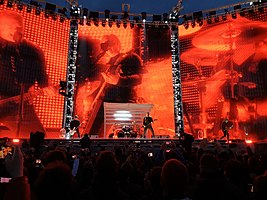
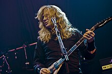
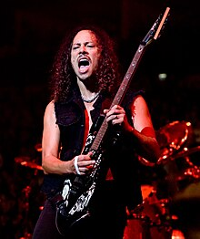
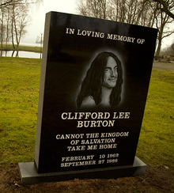
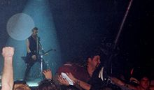
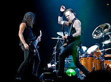
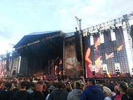
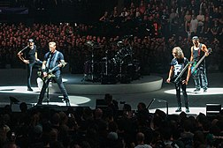
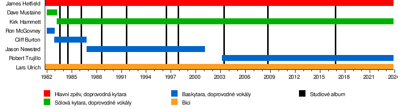

Metallica
 Metallica je americká metalová skupina založená v roce 1981 v Los Angeles. Skupina se dala dohromady na základě inzerátu v losangeleských novinách, který podal bubeník Lars Ulrich. Jádrem skupiny jsou bubeník Lars Ulrich, zpěvák a doprovodný kytarista James Hetfield, a sólový kytarista Kirk Hammett. V úloze basového kytaristy se vystřídalo více hudebníků, v současnosti je jím Robert Trujillo. Skupina také dlouho spolupracovala s producentem Bobem Rockem, který produkoval všechna alba od roku 1990 do roku 2003 a pomáhal také jako dočasný baskytarista po odchodu Jasona Newsteda do příchodu Trujilla.
Pro první alba Metallicy jsou typická rychlejší tempa skladeb, agresivní a ve svém stylu i hudebně náročnější kompozice. Tato skutečnost je zařadila společně se skupinami Megadeth, Slayer a Anthrax do „Velké čtyřky“ thrash metalu.[1]
Kapela si dokázala postupně získávat stále větší a větší množství fanoušků v undergroundu, a také přízeň kritiky. Někteří kritici považují album Master of Puppets z roku 1986 za jedno z nejvýznamnějších metalových alb. Skupina dosáhla výrazný komerční úspěch s pátým albem Metallica (známým také jako Black Album), vydaným roku 1991, které debutovalo na 1. místě žebříčku Billboard 200. Tímto albem se kapela počala ubírat směrem ke střednímu proudu. Celosvětového ohlasu dosáhly singly „Fade to Black“, „Master of Puppets“, „Welcome Home (Sanitarium)“, „One“, „Enter Sandman“, „The Unforgiven“, „Nothing Else Matters“, „Fuel“ a „Whiskey in the Jar“.
V roce 2000 Metallica, spolu s několika dalšími umělci, zažalovala společnost Napster za sdílení materiálu chráněného autorskými právy bez souhlasu členů kapely.[2] Spor se skončil dohodou a z Napsteru se stala placená služba.
Album St. Anger, vydané v roce 2003, navzdory debutu na 1. místě žebříčku Billboard 200, zklamalo některé fanoušky, kterým chyběla kytarová sóla a vadily „plechové“ bicí. Dokument s názvem Some Kind of Monster přiblížil fanouškům proces nahrávání alba.
Metallica doposud vydala deset studiových alb, čtyři živá alba, šest EP, dvacet pět videoklipů a šestačtyřicet singlů. Skupina vyhrála osm cen Grammy[3] a jako jediné kapele v historii se jí podařilo bodovat v albovém žebříčku Billboard 200 na prvním místě s pěti po sobě následujícími alby.[4] Album Metallica (1991), z kterého se v USA prodalo více než 15 miliónů kopií (22 mil. celosvětově), je 25. nejprodávanějším albem v USA.[5] V období, kdy vyšlo jejich předposlední album Death Magnetic (2008) se celkový počet prodaných nahrávek odhadoval na více než 100 miliónů. K září 2008 byla Metallica pátým nejlépe se prodávajícím hudebním interpretem, od 25. května 1991, kdy začal informační systém SoundScan sledovat prodejnost nahrávek. Za sledované období prodala Metallica jenom v Spojených státech 50 111 000 alb.[6]
V roce 2009 byla skupina uvedena do Rock and Roll Hall of Fame. Úvodní slovo ceremoniálu přednesl Flea.[7]
Historie
Začátky (1981–1983)
Metallica vznikla v Los Angeles, v Kalifornii, v USA, když si, v druhé půlce roku 1981, bubeník Lars Ulrich napsal inzerát do losangelských novin The Recycler: „bubeník hledá ostatní metalové hráče, abychom mohli jamovat na hudbu skupin Tygers of Pan Tang, Diamond Head a Iron Maiden.“ Na inzerát poté odpověděli kytarista James Hetfield a Hugh Tanner ze skupiny Leather Charm. Ačkoliv se ještě nevytvořila skupina, Ulrich už požádal zakladatele vydavatelství Metal Blade Records Briana Slagela, jestli by nemohl nahrát skladbu pro novou kompilaci vydavatelství zvanou Metal Massacre. Slagel souhlasil a Ulrich přesvědčil Hetfielda, aby zpíval a hrál na rytmickou kytaru. Skupina tedy byla oficiálně založena v říjnu 1981, pět měsíců poté, co se Ulrich a Hetfield poprvé setkali.
Ulrichův přítel Ron Quintana potom vymyslel jméno Metallica (mezi jeho návrhy se objevilo i název MetalMania). Ulrich nakonec použil jméno Metallica a pak dal druhý inzerát do novin The Recycler, a do něho napsal, že hledá sólového kytaristu. Nakonec odpověděl Dave Mustaine, a poté, co Hetfield a Ulrich viděli jeho drahé vybavení, byl začleněn do skupiny. V roce 1982 pak Metallica nahrála první vlastní skladbu „Hit the Lights“ pro kompilaci Metal Massacre (kde byla skupina uvedena jako „Mettallica“). Hetfield hrál na basovou kytaru a Lloyd Grant hrál kytarové sólo. Kompilace vyšla 15. června 1982. Ačkoliv byli členové rozhněváni chybou na obalu, Metallica se dokázala touto skladbou dostatečně proslavit, a tak si mohla poprvé naživo zahrát 14. března 1982 v Radio City v Anaheimu v Kalifornii s nově začleněným baskytaristou Ronem McGovneym. První skutečný koncert kapely (sice zahráli již o dva týdny dříve v Anaheimu, ale kvůli návštěvě pouze asi dvaceti lidí se jednalo spíše o večírek) se uskutečnil až 27. března 1982 v hollywoodském klubu Whisky a Go Go. Původně měli pouze předskakovat britským Saxon, ale nakonec hráli celý večer. Metallica pak nahrála první demo, které se jmenovalo Power Metal (podle Quitanovy vizitky ze začátku roku 1982). Na podzim roku 1982 ale Ulrich a Hetfield navštívili vystoupení skupiny Trauma v nočním klubu Whisky a Go Go, v němž hrál baskytarista Cliff Burton. Oba dva byli ohromeni Burtonovým používáním wah-wah pedálu a požádali ho, jestli by se nepřidal k Metallice. Hetfield a Mustaine pak chtěli dostat McGovneyho pryč ze skupiny, protože si mysleli, že „s ničím nepřispěl, jenom poslouchal“. Ačkoliv Burton nabídku původně odmítl, na konci roku přijal s podmínkou, že se skupina přesune do El Cerrita v San Franciscu. První vystoupení Metallicy s Burtonem bylo v nočním klubu The Stone v březnu 1983. První nahrávka s Burtonem bylo demo Megaforce z roku 1983.
Metallica byla připravena nahrát první album, ale když Metal Blade nebyl schopný pokrýt dodatečné finance, skupina začala hledat další možnosti. Koncertní promotér Johny „Z“ Zazula, který slyšel demo „No Life 'til Leather“, nabídl, že sjedná dohodu mezi Metallicou a newyorskými nahrávacími společnostmi. Potom, co se zjistilo, že společnosti nemají zájem nahrávat, si Zazula půjčil peníze, aby pokryl náklady na nahrávání a nechal podepsat Metallicu smlouvu pro jeho vlastní vydavatelství Megaforce Records.
Kill ’Em All a Ride the Lightning (1983–1984)
 Na natáčení prvního alba Kill 'Em All jela kapela do Rochesteru v New Yorku, kde se Hetfield, Ulrich a Burton rozhodli z kapely vyloučit Mustaina pro jeho problémy s alkoholem, drogami a násilnickým chováním, během sešlosti 11. dubna 1983. Mustaina nahradil Kirk Hammett z kapely Exodus, který se stal členem Metallicy ještě ten samý den. První vystoupení s Hammetem bylo 16. dubna 1983 v nočním klubu The Showplace v Doveru v New Jersey. Album se nejprve mělo jmenovat Metal Up Your Ass, ale kvůli sporu mezi vydavateli a distributory, kteří odmítali vydat album s tímhle názvem, bylo album přejmenováno na Kill 'Em All a album tak vyšlo 27. května 1983 a je považováno za klasiku žánru. Album bylo vydáno firmou Megaforce Records v USA a firmou Music for Nations v Evropě a umístilo se na 120 místě žebříčku Billboard 200 v roce 1988 a ačkoliv album nebylo důležitým finančním úspěchem, pomohlo Metallice získat základnu posluchačů v undergroundové metalové scéně. Metallica po vydání svého prvního alba vyjela na své první turné (s britskou kapelou Raven), aby podpořila vydání alba. V únoru 1984 předskakovala skupině Venom na turné Seven Dates of Hell, kde skupina hrála před sedmi tisíci lidmi na Aardschokovém Festivalu ve městě Zwolle v Nizozemsku.
Mustaine, který po odchodu založil skupinu Megadeth, často v rozhovorech vyjadřoval svoji nelibost vůči Hammetovi. Také říkal, že mu Hammet "ukradl job". Mustaine byl "nasrán", protože věří, že se Hammet stal známý díky hraním skladeb, které napsal on. V roce 1985 v rozhovoru s Metal Force, Mustaine o Hammetovi řekl: „Je to opravdu legrační, jak Kirk Hammet ukradl všechna má sóla, která jsem nahrál v No Life 'til Leather a vy jste ho ještě zvolili nejlepším kytaristou časopisu.“ Na první album skupiny Megadeth Killing Is My Business… and Business Is Good! z roku 1985 Mustaine zařadil skladbu „Mechanix“, kterou Metallica upravila a přejmenovala na „The Four Horsemen“ (z alba Kill 'Em All). Mustaine řekl, že to udělal proto, aby naštval Metallicu. Ta zase oponovala a označila Mustaina za alkoholika a za muzikanta, který ani neumí hrát na kytaru.
14. ledna 1984, po jednom z koncertů, někdo vykradl náklaďák s celou hudební výbavou, členům skupiny zůstaly jen ty kytary, které měli s sebou v hotelu. Z tohoto zážitku se zrodila první balada Metallicy „Fade to Black“. Píseň má velice pesimistický text: „Ztratil jsem chuť do života… nic mi nezůstalo, potřebuji konec, abych se osvobodil“. Následně se Metallica vydala na evropské turné.
 Metallica nahrála druhé studiové album, Ride the Lightning, ve studiu Sweet Silence v Kodani v Dánsku. Producentem tentokrát byl Flemming Rasmussen. Album bylo vydáno v srpnu 1984 a umístilo se na stém místě v Billboard 200. Zvláštní je, že v tiskárně ve Francii omylem vytiskli zelené obaly k albu, které se později staly vysoce ceněnou sběratelskou raritou. Ostatní skladby z alba jsou „Fight Fire With Fire“ (tématem písně je nukleární válka), „For Whom the Bell Tolls“, „Fade to Black“, „Trapped Under Ice“, „Escape“ (pokus kapely o rádiový hit), „Creeping Death“ (skladba, která vypráví biblický příběh o židovském odchodu z otroctví v Egyptě, zaměřující se především na mor, jenž postihl Egypťany) a instrumentální skladba „The Call of Ktulu“. Mustaine je označen jako spoluautor skladeb „Ride the Lightning“ a „The Call of Ktulu“.
Poté, co ředitel vydavatelství Elektra Records Michael Alago a spoluzakladatel firmy Q-Prime Management Cliff Burnstein viděli koncert Metallicy, nabídli jí smlouvu, která byla pro skupinu výhodná a tak ji 12. září podepsala. Úspěch Metallicy byl pak zvýrazněn tím, že British label Music for Nations vydal limitovanou edici singlu Creeping Death, kterého se prodalo 40 000 kusů. Dvě ze tří skladeb se objevily na znovuvydaném albu Kill 'Em All (vydaném v roce 1989 Elektrou, obsahující předělávky skladeb „Am I Evil?“ od Diamond Head a „Blitzkrieg“ od skupiny Blitzkrieg). Metallica poté vyjela na první velké evropské turné se skupinou Tank s průměrnou návštěvou 1300 lidí. Po návratu do USA skupina absolvovala turné se skupinami W.A.S.P. a Armored Saint.
17. srpna 1984 skupina hrála na festivalu Monsters of Rock v Donington Parku vedle kapel jako Ratt a Bon Jovi před 70 000 lidmi. James Hetfield na koncertě přednesl slavnou řeč na téma Metallica a jiné kapely tohoto festivalu: „Jestli jste přišli, abyste viděli barevný hadry ze spandexu a make-up, nebo jiný sračky a čekáte na slova rock'n'roll, baby v každý písničce, tak my nejsme vaší kapelou“. Po vystoupení na festivalu se situace Metallicy v Anglii zlepšila a prodej desek se zdvojnásobil. 31. srpna skupina hrála před obecenstvem 60 tisíc posluchačů na festivalu Days on the Green v Oaklandu v Kalifornii.
Master of Puppets a smrt Cliffa Burtona (1984–1986)
Třetí album Metallicy, Master of Puppets, bylo taktéž nahráno ve studiu Sweet Silence a bylo vydáno v březnu 1986. Na albu pracovali od léta 1985, natáčení trvalo od 2. září do 27. prosince, v lednu pak bylo album mixováno. Album dosáhlo 29. příčky v Billboardu 200 a vydrželo tam 72 týdnů. Album Master of Puppets bylo první, které Metallice získalo zlaté album, a to 4. listopadu 1986 a poté roku 2003 bylo šestkrát označeno za platinové. Steve Huey z Allmusic označil album za „největší úspěch skupiny“. Titulní skladba pojednává o kokainu, jenž byl v té době velmi oblíbený. Po vydání alba se Metallica spolu s Ozzym Osbournem vydala na turné po celých Spojených státech amerických. Hetfield si při něm zlomil zápěstí a proto pouze zpíval (na kytaru za něho hrál John Marshall).
 Poslední píseň, kterou Cliff Burton s Metallicou hrál, byla Fight Fire with Fire dne 26. září 1986 na koncertě v Solnahallenu v Solně u Stockholmu,[8] když byla kapela na evropské části turné Damage, Inc. Tour.[9] Ráno 27. září 1986 jela skupina autobusem ze Stockholmu do Kodaně. U Dörarpu ve Švédsku však řidič autobusu ztratil kontrolu nad vozem a dostal smyk, což poté způsobilo převrácení autobusu. Hetfield měl několik odřenin, Ulrich si zlomil prst u nohy, Hammett byl na chvíli v bezvědomí a krátce neviděl na jedno oko. Burton byl při smyku vyhozen z horního lůžka oknem a autobus se na něho záhy převrátil. Byl na místě mrtvý. Kirk mohl mluvit o štěstí, jelikož lůžko, na kterém Burton ležel, bylo původně jeho. Pohřeb se konal 7. října v San Francisku. Cliffovi na rozloučenou hrála jeho skladba „Orion“. Burtonova smrt nechala budoucnost skupiny v nejistotě. Zbývající členové se rozhodli, že by Burton chtěl, aby pokračovali a s požehnáním Burtonovy rodiny hledali náhradu.[10]
Zhruba čtyřicet lidí zkoušelo získat místo baskytaristy, včetně Lese Claypoola ze skupiny Primus, Troye Gregoryho ze skupiny Prong a frontmana kapely Flotsam and Jetsam, Jasona Newsteda. Newsted se naučil úplně všechny skladby a po konkurzu ho skupina pozvala do klubu Tommy's Joynt v San Franciscu. Hetfield, Ulrich a Hammett se rozhodli, že Newsted je ten pravý, kdo má nahradit Burtona. První vystoupení s Newstedem bylo v Country Clubu v Resedě v Los Angeles.
Potom, co se Newsted přidal ke skupině, skupina dokončila na začátku roku 1987 turné. V březnu 1987 si Hetfield podruhé zlomil zápěstí. V létě 1987 se kapela „zašila“ v garáži Larse v East Bay v San Franciscu, kde začaly zkoušky, na kterých hráli coververze skupin NWOBHM. V červenci se Metallica vrátila do studia A.M. Conway v Los Angeles, kde nahráli některé skladby z garážových zkoušek. Za šest dnů z toho vzešlo minialbum The $5.98 E.P. Garage Days Re-Revisited. Album bylo nahráno, jako zkouška nově sestaveného studia, zkouška pro Newsteda a zmírnění smutku a stresu po smrti Burtona. 21. srpna byla premiéra této desky, která ale od roku 1989 už nebyla běžně v prodeji (znovu vyšla jako bonus pozdější desky Garage Inc. v roce 1998). Video nazvané Cliff 'Em All bylo vydáno v roce 1987, aby připomínalo tři roky Burtona v Metallice. Video se skládá z basových sól, domácích videí a fotek.
…And Justice for All a Metallica (1988–1993)
...And Justice for All bylo vydáno v roce 1988. Původ jejího názvu můžeme hledat v posledních slovech americké přísahy vlajce: „I pledge all allegiance to the flag of the United States of America and to the Republic for which it stands, one nation, under God, individual, with liberty and justice for all. (Přísahám úplnou věrnost vlajce Spojených států amerických a republice, za niž vlaje, národu pod vládou Boží, nezávislému, se svobodou a spravedlností pro všechny). Album bylo komerčním trhákem, dosáhlo na šesté místo v Billboard 200 a stalo se tak prvním, které bylo v první desítce. Album se pak stalo platinové devět týdnů po vydání. Metallica tak strhla z výsluní tehdy módní hairmetalové kapely. Newstedova basová linka byla úmyslně utlumená a jeho nápady byly ignorovány (dostal ale zásluhy za část písně „Blackened“). Také bylo několik stížností na produkci: např. Steve Huey z Allmusic si všiml, že Ulrichovy bicí jsou více cvakající než bušící a že kytary málo zní. Turné k propagaci alba se jmenovalo Damaged Justice.
Od předešlých alb se ...And Justice for All liší zvukově a je určitým posunem i ve stylu. Bylo nominováno na cenu Grammy. Ke skladbě „One“ byl v lednu 1989 natočen první videoklip kapely. Metallica se pak vydala na velké turné Damaged Justice, které začalo už 11. září 1988 v Budapešti a skončilo 7. října 1989 v São Paulu.
Společně s prací na novém albu začala kapela hledat nového producenta, protože Rasmussen byl podle názoru členů „moc panovačný“. Nahradil jej Bob Rock. Nahrávání začalo v říjnu 1990 a mělo být dokončeno v březnu 1991. Premiéra však byla několikrát odložena, protože nahrávání skončilo až v červnu 1991. Vzniklo i několikahodinové video ze zákulisí studia (A Year and a Half in the Life of Metallica). Premiéra samotné desky byla až 12. září. Album dostalo jednoduchý název Metallica, říká se mu také Black Album. Stalo se nejznámějším a mělo také nejlepší prodejnost. Některé jeho skladby už byly přijatelné i pro mainstreamová média a tím jejich popularita dále rostla. 16. března 1999 Metallica získala za 11 miliónů prodaných nosičů Black Album ocenění Diamond Award. Album se stalo jedním z nejznámějších alb v rockové historii. Kapela se od té doby stala komerčně úspěšnější a to se projevilo i na zvětšování koncertního pódia a přidávání dalších efektů.
Metallica se 17. července 1992 vydala na turné s Guns N' Roses. Při koncertě v Montrealu 8. srpna ohňostroj vybuchl v nepravou chvíli a silně popálil Jamese na tváři, rukách i nohách. Metallica tak zrušila několik vystoupení a po zbytek turné James jenom zpíval; znovu za něj zaskočil John Marshall, tak jako dříve, když měl James několikrát zlomenou ruku. Po krátké pauze 9. října 1992 se kapela vydává na evropskou Wherever I May Roam Tour. Koncem prosince koncertovala v Japonsku. Po sérii koncertů si členové dopřáli měsíční volno. Věnovali se hlavně rodině a svým zájmům. Kirk započal spolupráci s časopisem Guitar World. Prostřednictvím tohoto časopisu dával kurzy hry na kytaru. V tomto měsíci pokračovala série koncertů.
V listopadu 1993 vyšel boxset Live Shit: Binge & Purge, první živé album kapely.
Load, Reload, Garage Inc. a S&M (1994–1999)
 Roku 1995 James a Lars začali pracovat na novém albu; i když předem věděli, že nebude jako předchozí. Lars chtěl, aby kapela „stárla s hrdostí“. V té době udělala Metallica na metalovou skupinu revoluční počin: všichni si ostříhali vlasy (Newsted tak učinil již roku 1992). Skladby, které tentokrát nesly místy až bluesový, countryový, nebo hard rockový feeling, byly hotovy už v dubnu, ale celé nahrávání trvalo rok. Album Load vyšlo u Polygramu v červnu 1996, nahrávalo se v The Plant Studios v Sausalitu, nedaleko San Francisca pod vedením Boba Rocka. Při práci na albu vzniklo něco kolem třiceti skladeb, na Load se ovšem dostalo jen čtrnáct z nich.
Mezitím bylo nahráno pokračování Loadu: ReLoad. Album opět vzniklo ve studiu The Plant mezi květnem 1995 a únorem 1996 a od července do října 1997. Mixovalo se tamtéž v září a říjnu 1997. Kapele na desce hostovala zpěvačka Marianne Faithfull (v písni „The Memory Remains“). Turné propagující tato dvě alba trvalo až do října 1998.
14. října, den po koncertě v San Diegu, se Metallica znovu vrátila do studia, aby nahrála nové písně na své další album. Garage Inc. vyšlo 23. listopadu 1998, které obsahuje všechny dosud nahrané coververze Metallicy a navíc 11 nových.
7. prosince 1998 byly vydány i videokazety, dokumentující koncerty ve Fort Worth v Texasu (8. a 9. května 1997). Režisérem byl Wayne Isham. Koncert, nazvaný Cunning Stunts byl rovněž vydán na dvou discích DVD, stal se tak prvním DVD skupiny.
V lednu 1999 kapelu kontaktoval dirigent a skladatel filmové hudby Michael Kamen. Navrhl, jestli by Metallica nechtěla nahrát pár koncertů se sanfranciským symfonickým orchestrem.
21. a 22. dubna 1999 se v Berkeley Community Theatre v San Franciscu uskutečnily dva koncerty. Na koncertech zazněly skladby ze všech alb, mimo alba Kill 'Em All. Metallica vydala záznam z těchto koncertů na albu S&M. Vyšlo 22. listopadu 1999 na dvojcédéčku. Koncerty natáčel i tým režiséra Wayneho Ishama, a tak je koncert dostupný také na videokazetě a DVD. Metallica při příležitosti vydání alba odehrála ještě další dva koncerty s orchestry – 19. listopadu v Berlíně a 23. listopadu v New Yorku. Album obsahuje dvě nové skladby – pomalou „Human“ ([majnus hjumn]) a „No Leaf Clover“, která je typickou metalovou baladou; jemné pasáže se střídají s tvrdšími. S tímto albem Metallica překonala další bariéry a původní představy o tom, co je a co není Metallica.
Žaloba proti Napsteru, Newstedův odchod a St. Anger (2000–2005)
 V roce 2000 Metallica nahrála poprvé skladbu pro soundtrack – „I Disappear“ – k filmu Mission:
Impossible
II.
V roce 2000 Metallica nahrála poprvé skladbu pro soundtrack – „I Disappear“ – k filmu Mission:
Impossible
II.
Právníci kapely rozpoutali jeden z největších soudních procesů v hudební historii – kvůli zpřístupňování muziky na internetu ve formátu MP3 zdarma proti firmě Napster. Udělali si tak mnoho nepřátel, avšak bránili tím autorská práva nejen svých písní. Lars, který stál v čele tohoto sporu, nakonec soud vyhrál. V létě Metallica hrála na 13 koncertech ve Spojených státech v rámci Summer Sanitarium Tour.
17. ledna 2001 z Metallicy odešel Jason Newsted – jako důvod uvedl, že hraní hudby, kterou miluje, se odrazilo na jeho zdraví jak fyzickém, tak psychickém. Metallica ve třech znovu vešla do studia. Na postu baskytaristy zaměstnali producenta Boba Rocka. V polovině července se Hetfield ocitl na odvykací kúře ze závislosti na alkoholu a jiných látkách. 10. prosince, po půl roce, Hetfield konečně ukončil svoje léčení.
 Už v první polovině prosince začala Metallica hledat nového baskytaristu, který by se s nimi vydal
na
koncertní šňůru po
Evropě, jméno ale nepadlo. Mezi kandidáty byli třeba: Mike Inez (Alice in Chains, Ozzy Osbourne),
Joey
Vera
(Armored
Saint ), Hetfieldův přítel Pepper Keenan (Corrosion of Conformity a Down) a další. V polovině ledna
byli
dopsáni Robert
Trujillo (ex- Suicidal Tendancies, ex- Ozzy Osbourne) a Eric Forrest (ex- VoiVod). Nakonec se 24.
ledna
2003
připojil k
Metallice právě Trujillo. St.Anger vyšlo 5. června. Album od některých fanoušků sklidilo kritiku,
protože na
albu nejsou
slyšet sólové kytary, které byly pro Hammetta tak charakteristické. Titulní skladba „St. Anger“
vyhrála
cenu
Grammy v
kategorii Best Metal Performance a další „Some Kind of Monster“ byla na cenu nominována v kategorii
Best
Hard Rock
Performance.
Už v první polovině prosince začala Metallica hledat nového baskytaristu, který by se s nimi vydal
na
koncertní šňůru po
Evropě, jméno ale nepadlo. Mezi kandidáty byli třeba: Mike Inez (Alice in Chains, Ozzy Osbourne),
Joey
Vera
(Armored
Saint ), Hetfieldův přítel Pepper Keenan (Corrosion of Conformity a Down) a další. V polovině ledna
byli
dopsáni Robert
Trujillo (ex- Suicidal Tendancies, ex- Ozzy Osbourne) a Eric Forrest (ex- VoiVod). Nakonec se 24.
ledna
2003
připojil k
Metallice právě Trujillo. St.Anger vyšlo 5. června. Album od některých fanoušků sklidilo kritiku,
protože na
albu nejsou
slyšet sólové kytary, které byly pro Hammetta tak charakteristické. Titulní skladba „St. Anger“
vyhrála
cenu
Grammy v
kategorii Best Metal Performance a další „Some Kind of Monster“ byla na cenu nominována v kategorii
Best
Hard Rock
Performance.
V této době točili režiséři Joe Berlinger a Bruce Sinofsky o Metallice dokument Some Kind Of Monster. Film má dvě a půl hodiny. Je v nich výřez z mnoha dnů každodenního života kapely. Mezi lety 2001 a 2003 bylo nahráno tisíc hodin materiálu. Rozpočet filmu je okolo 1,5 miliónu dolarů. Premiéra filmu byla v lednu 2004 na filmovém festivalu v Park City.
V listopadu 2004 skončila jeden a půl roku trvající koncertní šňůra 180 vystoupení. Časopis Rolling Stone vyhlásil Jamese Hetfielda mužem roku 2004. Hetfield dostal 12. května 2006 speciální cenu. Jedná se o Cenu Stevie Ray Vaughana a James si ji zasloužil díky podpoře fondu MusiCares MAP a díky vytrvalé pomoci závislým hudebníkům s odvykací léčbou.
Metallica se v červnu roku 2006 vydala na miniturné Escape from the studio '06, které začalo na obrovském festivalu v Německu Rock am Ring 2006. Tento koncert byl vysílán v přímém přenosu na MTV. Skupina zahrála na koncertech celé legendární album Master of Puppets.
Death Magnetic, Lulu a Beyond Magnetic (2006–2011)
 V srpnu, po skončení turné, se Metallica vrátila zpět do svého studia HQ, kde pokračují práce na novém albu Death Magnetic. Producentem alba je Rick Rubin.
V květnu 2008 Metallica spustila promo stránku MissionMetallica.com, kde jsou postupně zveřejňovány videa a fotografie z natáčení. Fanoušci si zde mohou album také zakoupit. Death Magnetic vyšlo 12. září 2008. V roce 2011 vyšlo EP Beyond Magnetic, s několika skladbami, které se nedostaly na album.
Dne 31. října 2011 vyšlo zcela nové album, které nese jméno Lulu. Metallica na něm spolupracovala se slavným hudebníkem Lou Reedem, album má celkem 10 skladeb. Většinou se dočkalo velmi negativních recenzí. Délka alba dosahuje téměř 90 minut.
Metallica: Through the Never a Hardwired… to Self-Destruct (2012–dosud)
Roku 2012 bylo odstartováno turné k 20. výročí legendárního alba Metallica, jinak známého také jako The Black Album. Podstatou celého turné bylo zahrát album kompletně celé. Turné bylo odstartováno v Praze a pokračovalo napříč Evropou. Fanoušci se dočkali premiéry 3 live zahrání skladeb Do not Tread on Me, My Friend of Misery a The Struggle Within. Zajímavostí bylo to, že celé album bylo zahráno odzadu. Před zahráním první skladby z Black Alba bylo promítnuto video z dob tohoto alba.
Další zajímavostí v tomto roce bylo to, že Metallica vytvořila vůbec svůj první festival s názvem Orion Music + More. Festival se již pomalu stává každoroční tradicí, každý rok na jiném místě. První Orion Music + More opět obsahoval celé Black Album. Druhý den zahrála skupina tentokrát celé Ride the Lightning.
V roce 2013 Metallica ohlásila svůj první 3D film. Dostal název podle skladby Through the Never. Ve filmu si zahrál Dane DeHaan v hlavní roli. Kromě něj si zahrála i samotná skupina. Záběry byly použity z předchozího roku z Mexika, který byl vyhlášen jejich zatím nejdražší koncert. Kapela se tedy soustředila po většině roku na film.
 Metallica odehrála 8. prosince 2013 koncert na polární stanici Base Carlini v Antarktidě a stala se tak první hudební skupinou v historii, která vystoupila naživo na všech kontinentech.[11]
V roce 2014 Metallica odstartovala zajímavé turné s názvem Metallica by Request, kde lidé hlasovali při nákupu lístků jaké skladby chtějí slyšet. Jako první šanci dostali členové MetClub, kteří hlasovali za ty nejunikátnější skladby. Ale jakmile i ostatní lidé mohli začít hlasovat, setlist zaplnily staré známé skladby. Stav hlasů bylo možné kontrolovat kdykoli na webu metallicabyrequest.com. Turné Metallica okořenila tím, že zahrála zcela novou píseň s názvem Lords of Summer, která připomíná staré časy skupiny z dob 80. let s podobnými riffy.
Na přelomu března a dubna 2014 se Metallica zúčastnila dalšího tribute alba, které bylo věnováno hudební legendě Ronnie James Dio. Metallica zahrála ne jednu, ale rovnou směs čtyř skladeb (tzv. medley) „A Light in the Black“, „Tarot Woman“, „Stargazer“ a „Kill the King“.
 18. srpna 2016 kapela na své webové stránce oznámila, že jejich desáté studiové album, Hardwired… to Self-Destruct, by mělo celosvětově vyjít 18. listopadu 2016 pod záštitou jejich vlastního labelu – Blackened Recordings. Skupina rovněž odhalila pořadí skladeb, obálku alba, a vydala videoklip k prvnímu albovému singlu „Hardwired“. V roce 2016 po vydání alba vyjela Metallica na tour s názvem Worldwired a 2. dubna 2018 vystoupila v pražské O2 aréně, kde zahráli mimo jiné i píseň Jožin z bažin Ivana Mládka. 18. srpna 2019 skupina opět vystoupila v Praze. 27. září skupina oznámila, že James Hetfield znovu podstoupí protialkoholní léčbu. Koncerty v Austrálii a na Novém Zélandu byly odloženy.
V červnu 2021 oznámili, že v létě 2022 pojedou na turné po deseti evropských zemích a to v Dánsku, Nizozemsku, Itálii, Česku, Německu, Francii, Švýcarsku, Belgii, Španělsku a Portugalsku.
28. listopadu 2022 skupina vydala singl „Lux Æterna“, kterým oznámila své jedenácté studiové album s názvem 72 Seasons, které by mělo vyjít 14. dubna 2023.
Metallica v Česku
- 24. května 1993 – Stadion Za Lužánkami – Brno (Nowhere Else to Roam Tour)
- 9. září 1996 – Tipsport arena – Praha (Poor Touring Me Tour)
- 25. května 1999 – Stadion Eden – Praha (Poor Touring Me Tour)
- 1. července 2004 – Tipsport arena – Praha (Madly In Anger With The World Tour)
- 3. června 2008 – Sinobo Stadium – Praha (European Vacation Tour)
- 19. června 2010 – Sonisphere Festival – Milovice (World Magnetic Tour)
- 7. května 2012 – Sinobo Stadium – Praha (The 2012 European Black Album Tour)
- 8. července 2014 – Výstaviště Praha – Praha (The Metallica By Request Tour)
- 2. dubna 2018 – O2 arena – Praha (WorldWired Tour)
- 18. srpna 2019 – Letiště Letňany – Praha (WorldWired Tour)
- 22. června 2022 – Letiště Letňany – Praha (The Return Of The European Summer Vacation - Prague Rocks)
Členové skupiny
- James Hetfield – hlavní zpěv, rytmická kytara (1981–dosud)
- Kirk Hammett – sólová kytara, doprovodné vokály (1983–dosud)
- Robert Trujillo – baskytara, doprovodné vokály (2003–dosud)
- Lars Ulrich – bicí, perkuse (1981–dosud)
- Dave Mustaine – sólová kytara, doprovodné vokály (1982–1983)
- Ron McGovney – baskytara, doprovodné vokály (1982)
- Cliff Burton – baskytara, doprovodné vokály (1982–1986; zemřel 1986)
- Jason Newsted – baskytara, doprovodné vokály (1986–2001)
- Bob Rock – baskytara, doprovodné vokály (2001–2003)
- John Marshall – rytmická kytara (1986, 1992 - náhrada za zraněného Hetfielda)
- Dave Lombardo – bicí (2004 - jedno vystoupení)
- Joey Jordison – bicí (2004 - jedno vystoupení)
Timeline
Diskografie
Podrobnější informace naleznete v článku Diskografie Metallicy.
Studiová alba
- 1983 – Kill 'Em All
- 1984 – Ride the Lightning
- 1986 – Master of Puppets
- 1988 – …And Justice for All
- 1991 – Metallica
- 1996 – Load
- 1997 – ReLoad
- 2003 – St. Anger
- 2008 – Death Magnetic
- 2016 – Hardwired… to Self-Destruct
- 2023 – 72 Seasons
Živá alba
- 1993 – Live Shit: Binge & Purge
- 1999 – S&M
- 2020 – S&M2
Cover alba
- 1998 – Garage Inc.
Spolupráce
- 2011 – Lulu
EP
- 1987 – The $5.98 E.P. / $9.98 CD: Garage Days Re-Revisited
- 2004 – Some Kind of Monster
- 2011 – Beyond Magnetic
Soundtracky
- 2013 – Metallica: Through the Never
Nevydané písně
- „the Mechanix“ – demo verze písně „the Four Horesemen“ s jiným textem (píseň vydal Dave Mustaine s kapelou Megadeath)
- „Fuel for Fire“ – demo verze písně „Fuel“ s odlišným textem
- „Dead Kennedy Rolls“ – demo z nahrávání alba St. Anger
- „the New Song (Death Is Not the End)“ - živá verze písně „The End of the Line“ s odlišným textem
- „the Other New Song (Vulturous)“ – demo z nahrávání alba Death Magnetic
Ocenění
Metallica získala 8 ocenení Grammy:
- 1990 – Nejlepší metalová skladba: „One“ (...And Justice for All)
- 1991 – Nejlepší metalová skladba: „Stone Cold Crazy“ (Garage Days Re-Revisited)
- 1992 – Nejlepší metalové album: "Metallica" (Black Album)
- 1999 – Nejlepší metalová skladba: „Better Than You“ (ReLoad)
- 2000 – Nejlepší hard rocková skladba: „Whiskey in the Jar“ (Garage Inc.)
- 2001 – Nejlepší rocková instrumentální skladba: „Call Of Ktulu“ (S&M) spolu s Michaelem Kamenem a Symfonií San Francisca
- 2004 – Nejlepší metalová skladba: „St. Anger“ (St. Anger)
- 2008 – Nejlepší metalová skladba: „My Apocalypse“ (Death Magnetic)